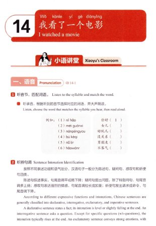
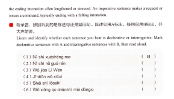
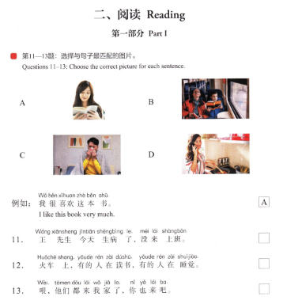
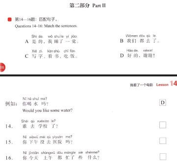
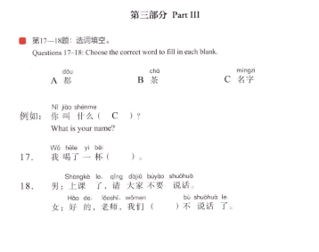
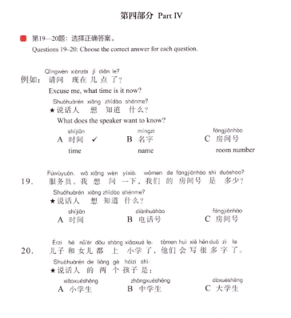

Mendengarkan rekaman audio (Audio 14-1), memilih kata Hanzi yang sesuai dengan suku kata yang didengar, lalu membaca nyaring kata tersebut.

🎧Instruksi Soal 1 (Audio 14-1)
听录音，根据听到的音节选择对应的词语，并大声朗读。
(Listen, choose the word that matches the syllable you hear, then read aloud / Dengarkan rekaman, cocokkan suku kata pinyin bernomor (1)–(6) dengan kata Hanzi yang tepat, lalu lafalkan dengan lantang.)
Memahami 4 jenis intonasi kalimat bahasa Mandarin (Berita, Tanya, Seru, Perintah) dan membedakan kalimat berita (A) dengan kalimat tanya (B).

📖 Kaidah Intonasi Kalimat (句调规则):
按照不同表述功能和语气划分，汉语句子一般分为陈述句、疑问句、感叹句和祈使句四类。陈述句叙述事实，句尾音调平或略下降；疑问句提出问题，除了特指问句，句尾音调多上扬；感叹句表达强烈的情感，句尾音调拉长或加重；祈使句发出请求或命令，句尾音调下降。 According to different expressive functions and intonations, Chinese sentences are generally classified into declarative, interrogative, exclamatory, and imperative sentences. A declarative sentence states a fact; its intonation is level or slightly falling at the end. An interrogative sentence asks a question. Except for specific questions (wh-questions), the intonation typically rises at the end. An exclamatory sentence conveys strong emotions, with the ending intonation often lengthened or stressed. An imperative sentence makes a request or issues a command, typically ending with a falling intonation. (Berdasarkan fungsi pengungkapan dan nadanya, kalimat bahasa Mandarin umumnya dibagi menjadi 4 jenis: kalimat berita [陈述句 — intonasi akhir datar/turun], kalimat tanya [疑问句 — intonasi akhir umumnya naik, kecuali tanya khusus/wh-question], kalimat seru [感叹句 — intonasi akhir diperpanjang/ditekankan], dan kalimat perintah [祈使句 — intonasi akhir turun].)
🎧Instruksi Latihan Intonasi
听录音，辨别听到的是陈述句还是疑问句。陈述句用A标出，疑问句用B标出，并大声朗读。
(Listen and identify whether each sentence you hear is declarative or interrogative. Mark declarative sentences with A and interrogative sentences with B, then read aloud / Tandai kalimat berita dengan A dan kalimat tanya dengan B, lalu baca nyaring.)
1
Nǐ shì xuéshēng ma
你是学生吗？ — Apakah kamu murid? · Kalimat Tanya (疑问句)
B (Contoh)
2
Nǐ shì nǎ guó rén
你是哪国人？ — Kamu berasal dari negara mana? · Kalimat Tanya (疑问句)
B
3
Wǒ jiào Lǐ Wén
我叫李文。 — Nama saya Li Wen. · Kalimat Berita (陈述句)
A
4
Jīntiān wǒ xiūxi
今天我休息。 — Hari ini saya beristirahat. · Kalimat Berita (陈述句)
A
5
Shéi shì lǎoshī
谁是老师？ — Siapa yang menjadi guru? · Kalimat Tanya (疑问句)
B
6
Wǒ xiǎng qù chāoshì mǎi dōngxi
我想去超市买东西。 — Saya ingin pergi ke supermarket membeli barang. · Kalimat Berita (陈述句)
A
📌 二、汉字 · Aksara Tionghoa (Chinese Characters)
字
二、汉字 · Chinese Characters — 汉字书写（七）
Latihan struktur aksara gabungan (上下结构, 上中下结构, 半包围结构, 全包围结构) serta menyalin kosakata — Sesuai HSK 1 Workbook Bab 14 (Hal. 103–104).
1. Struktur Aksara🧱 学练合体字结构 · Compound Character Structure Practice
第11—13题：选择与句子最匹配的图片。(Questions 11–13: Choose the correct picture for each sentence / Pilih gambar yang paling cocok untuk setiap kalimat).

📖Petunjuk & Format Soal Reading Part 1
第11—13题：选择与句子最匹配的图片。
Bahasa Inggris: Questions 11–13: Choose the correct picture for each sentence. Bahasa Indonesia: Pertanyaan 11–13: Bacalah setiap kalimat, lalu tentukan gambar (A, B, C, atau D) yang paling sesuai.
💡 Klik kartu gambar atau baris kalimat untuk mendengarkan pelafalan audio!
🖼️ Pilihan Gambar Tersedia (A — D):
Gambar A (Contoh)
📖👩
看书(kàn shū)
Wanita sedang membaca buku (Kunci Contoh)
Gambar B ✓
🚆📖
火车上读书(huǒchē shang dúshū)
Penumpang membaca buku di dalam kereta api (Kunci Soal 12)
Gambar C ✓
🤒🤧
生病了(shēngbìng le)
Pria berselimut sambil mengelap hidung karena sakit (Kunci Soal 11)
Gambar D ✓
📞🍳
打电话做饭(dǎ diànhuà zuòfàn)
Ibu menelepon sambil memasak di dapur (Kunci Soal 13)
例如 (Contoh Soal)
📖 Kunci Contoh: Gambar A ✓
我很喜欢这本书。
Wǒ hěn xǐhuan zhè běn shū.
Arti Terjemahan: Saya sangat menyukai buku ini. (I like this book very much.)
Pembahasan Contoh: Kalimat menyebutkan 我很喜欢这本书 (Wǒ hěn xǐhuan zhè běn shū = Saya sangat menyukai buku ini). Gambar yang paling cocok adalah Gambar A yang memperlihatkan seorang wanita sedang membaca buku.
11
Soal No. 11: Tuan Wang Sakit Hari Ini (王先生今天生病了，没来上班。)
🤒 Kunci Jawaban: Gambar C ✓
王先生今天生病了，没来上班。
Wáng xiānsheng jīntiān shēngbìng le, méi lái shàngbān.
Arti Terjemahan: Tuan Wang hari ini sakit, tidak datang masuk kerja. (Mr. Wang is sick today and didn't come to work.)
Pembahasan Soal 11: Kata kunci pada kalimat ini adalah 生病了 (shēngbìng le = sakit) dan 没来上班 (méi lái shàngbān = tidak datang kerja). Gambar yang paling tepat adalah Gambar C yang memperlihatkan seorang pria berselimut dan sedang flu/sakit.
12
Soal No. 12: Membaca dan Tidur di Kereta Api (火车上，有的人在读书，有的人在睡觉。)
🚆 Kunci Jawaban: Gambar B ✓
Arti Terjemahan: Di atas kereta api, ada orang yang sedang membaca buku, dan ada yang sedang tidur. (On the train, some people are reading, and some people are sleeping.)
Pembahasan Soal 12: Kata kunci pada kalimat ini adalah 火车上 (huǒchē shang = di atas kereta api) dan 在读书 (zài dúshū = sedang membaca buku). Gambar yang paling sesuai adalah Gambar B yang memperlihatkan penumpang membaca buku di dalam kereta api.
13
Soal No. 13: Mengajak Datang ke Rumah Lewat Telepon (喂，他们都来我家了，你也来吧。)
📞 Kunci Jawaban: Gambar D ✓
喂，他们都来我家了，你也来吧。
Wèi, tāmen dōu lái wǒ jiā le, nǐ yě lái ba.
Arti Terjemahan: Halo, mereka semua sudah datang ke rumah saya, kamu juga datanglah. (Hello, they have all come to my home, you come too.)
Pembahasan Soal 13: Kalimat diawali dengan sapaan telepon 喂 (wèi = halo) dan mengajak teman datang ke rumah (都来我家了). Gambar yang paling cocok adalah Gambar D yang memperlihatkan seorang wanita sedang menelepon sambil memasak di dapur.
📌 二、阅读 · Reading Part 2: 第二部分 (Soal 14–16)
阅
Reading Part 2 · 第二部分 (第 14—16 题)
第14—16题：匹配句子。(Questions 14–16: Match the sentences / Pasangkan pertanyaan dengan respon kalimat yang paling sesuai).

📋Petunjuk & Format Soal Reading Part 2
第14—16题：匹配句子。
Bahasa Inggris: Questions 14–16: Match the sentences. Bahasa Indonesia: Pertanyaan 14–16: Pasangkan setiap kalimat dengan respon yang paling sesuai (A, B, C, atau D).
💡 Klik kartu respon atau baris kalimat untuk mendengarkan audio pelafalan alami Mandarin!
📦 Pilihan Respon Tersedia (A — D):
A:是的，我睡了一觉。
Shì de, wǒ shuìle yí jiào.
– Ya, saya tidur sebentar.
B:我们都去了。
Wǒmen dōu qù le.
– Kami semua sudah pergi.
C:写字、看书、吃饭。
Xiězì, kànshū, chīfàn.
– Menulis huruf, membaca buku, makan.
D:好的，谢谢！Contoh (D)
Hǎo de, xièxie!
– Baik, terima kasih! (Jawaban Contoh)
例如 (Contoh Soal)
📖 Kunci Contoh: D ✓
你喝水吗？
Nǐ hē shuǐ ma?
Arti Terjemahan: Apakah kamu mau minum air? (Would you like some water?)
👉 Pasangan Respon: D. 好的，谢谢！(Hǎo de, xièxie!) – Baik, terima kasih!
Pembahasan Contoh: Pertanyaan menawarkan minuman (你喝水吗？). Respon sopan untuk menerima tawaran adalah D. 好的，谢谢！(Baik, terima kasih!).
14
Soal No. 14: Menanyakan Siapa yang Pergi ke Sekolah (谁去学校了？)
🏫 Kunci Jawaban: B ✓
谁去学校了？
Shéi qù xuéxiào le?
Arti Terjemahan: Siapa yang pergi ke sekolah?
👉 Pasangan Respon: B. 我们都去了。(Wǒmen dōu qù le.) – Kami semua sudah pergi.
Pembahasan Soal 14: Pertanyaan menggunakan kata tanya orang 谁 (shéi = siapa) dengan kata kerja 去 (pergi). Jawaban yang tepat adalah B. 我们都去了 (Kami semua sudah pergi).
15
Soal No. 15: Konfirmasi Tidak Pergi ke Rumah Sakit (你下午没去医院吗？)
🛌 Kunci Jawaban: A ✓
你下午没去医院吗？
Nǐ xiàwǔ méi qù yīyuàn ma?
Arti Terjemahan: Apakah kamu tidak pergi ke rumah sakit siang/sore tadi?
👉 Pasangan Respon: A. 是的，我睡了一觉。(Shì de, wǒ shuìle yí jiào.) – Ya, saya tidur sebentar.
Pembahasan Soal 15: Pertanyaan konfirmasi ya/tidak berakhiran 吗 (Apakah kamu tidak pergi ke rumah sakit?). Respon yang sesuai adalah konfirmasi A. 是的，我睡了一觉 (Ya [benar tidak pergi], saya tidur sebentar).
16
Soal No. 16: Menanyakan Kesibukan Pagi Ini (你今天上午都忙了些什么？)
✍️ Kunci Jawaban: C ✓
你今天上午都忙了些什么？
Nǐ jīntiān shàngwǔ dōu mángle xiē shénme?
Arti Terjemahan: Apa saja yang kamu sibukkan pagi ini?
👉 Pasangan Respon: C. 写字、看书、吃饭。(Xiězì, kànshū, chīfàn.) – Menulis huruf, membaca buku, makan.
Pembahasan Soal 16: Pertanyaan menanyakan rangkaian aktivitas pagi hari (都忙了些什么 = sibuk melakukan apa saja). Jawaban yang menyebutkan daftar aktivitas adalah C. 写字、看书、吃饭 (Menulis huruf, membaca buku, makan).
📌 二、阅读 · Reading Part 3: 第三部分 (Soal 17–18)
填
Reading Part 3 · 第三部分 (第 17—18 题)
第17—18题：选词填空。(Questions 17–18: Choose the correct word to fill in each blank / Pilih kata yang tepat untuk melengkapi bagian rumpang).

✏️Petunjuk & Format Soal Reading Part 3
第17—18题：选词填空。
Bahasa Inggris: Questions 17–18: Choose the correct word to fill in each blank. Bahasa Indonesia: Pertanyaan 17–18: Pilihlah kata yang paling tepat untuk mengisi bagian rumpang dalam kalimat.
💡 Klik kartu kata atau baris kalimat untuk mendengarkan audio pelafalan alami Mandarin!
📦 Pilihan Kosakata Tersedia (A — C):
A:都(dōu)= semua / semuanya
B:茶(chá)= teh
C:名字(míngzi)= nama
CONTOH例如 (Lìrú)
Kunci Contoh: [ C ✓ ] (名字 / míngzi)
你叫什么名字？
Nǐ jiào shénme míngzi?
Arti Terjemahan: Siapa namamu? (What is your name?)
🔊 Klik untuk mendengarkan lafal kalimat lengkap
💡 Penjelasan Contoh: Pola baku untuk menanyakan nama seseorang adalah 你叫什么名字？ (Nǐ jiào shénme míngzi?). Kata yang tepat untuk mengisi bagian rumpang adalah C (名字 / míngzi = nama).
17Soal No. 17: Kata Benda Minuman (我喝了一杯（ 茶 ）。)
Kunci: B ✓
我喝了一杯茶。
Wǒ hēle yì bēi chá.
Arti Terjemahan: Saya sudah minum secangkir teh. (I drank a cup of tea.)
🔊 Klik untuk mendengarkan lafal kalimat lengkap
💡 Pembahasan Soal 17: Kata kerja 喝 (hē = minum) dan kata satuan 一杯 (yì bēi = secangkir) membutuhkan objek minuman, yaitu B. 茶 (chá = teh) → 我喝了一杯茶.
18Soal No. 18: Kata Keterangan 都 (我们（ 都 ）不说话了。)
Kunci: A ✓
男:上课了，请大家不要说话。Shàngkè le, qǐng dàjiā búyào shuōhuà.
Arti Terjemahan: “Pelajaran sudah dimulai, semuanya harap jangan berbicara.”
女:好的，老师，我们都不说话了。Hǎo de, lǎoshī, wǒmen dōu bù shuōhuà le.
Arti Terjemahan: “Baik, Guru, kami semua tidak berbicara lagi.”
💡 Pembahasan Soal 18: Setelah subjek jamak 我们 (wǒmen = kami), digunakan kata keterangan A. 都 (dōu = semua) dalam pola 都 + 不 → 我们都不说话了 (Kami semua tidak berbicara lagi).
📌 二、阅读 · Reading Part 4: 第四部分 (Soal 19–20)
答
Reading Part 4 · 第四部分 (第 19—20 题)
第19—20题：选择正确答案。(Questions 19–20: Choose the correct answer for each question / Baca pernyataan dan pertanyaan, lalu tentukan jawaban yang benar A, B, atau C).

📌Petunjuk & Format Soal Reading Part 4
第19—20题：选择正确答案。
Bahasa Inggris: Questions 19–20: Choose the correct answer for each question. Bahasa Indonesia: Pertanyaan 19–20: Bacalah kalimat pengantar, lalu jawab pertanyaan bertanda bintang (★) dengan memilih opsi A, B, atau C.
💡 Klik kalimat pengantar, pertanyaan, atau pilihan jawaban untuk mendengarkan audio pengucapan alami Mandarin!
例
例如 (Contoh Soal): Menanyakan Jam Saat Ini
Teks Pengantar · 句子:
请问现在几点了？
Qǐngwèn xiànzài jǐ diǎn le?
Arti Terjemahan: Permisi, sekarang jam berapa ya? (Excuse me, what time is it now?)
Pertanyaan Berbintang · 问:
★ 说话人想知道什么？
★ Shuōhuàrén xiǎng zhīdào shénme?
Arti Terjemahan: Apa yang ingin diketahui oleh pembicara? (What does the speaker want to know?)
A. 时间(shíjiān)= Waktu (time)✓
B. 名字(míngzi)= Nama (name)
C. 房间号(fángjiānhào)= Nomor kamar (room number)
💡 Pembahasan Contoh: Pembicara menanyakan 现在几点了？ (sekarang jam berapa?), yang berarti ia ingin mengetahui informasi tentang A. 时间 (shíjiān = waktu/jam).
19
Soal No. 19: Menanyakan Nomor Kamar (我们的房间号是多少？)
Teks Pengantar · 句子:
服务员，我想问一下，我们的房间号是多少？
Fúwùyuán, wǒ xiǎng wèn yíxià, wǒmen de fángjiānhào shì duōshao?
Arti Terjemahan: Pelayan, saya mau tanya sebentar, berapa nomor kamar kami?
Pertanyaan Berbintang · 问:
★ 说话人想知道什么？
★ Shuōhuàrén xiǎng zhīdào shénme?
Arti Terjemahan: Apa yang ingin diketahui oleh pembicara?
A. 时间(shíjiān)= Waktu
B. 电话号(diànhuàhào)= Nomor telepon
C. 房间号(fángjiānhào)= Nomor kamar✓
💡 Pembahasan Soal 19: Pada kalimat pengantar, pembicara bertanya kepada pelayan: 我们的房间号是多少？ (Berapa nomor kamar kami?). Jadi, hal yang ingin diketahui adalah C. 房间号 (fángjiānhào = nomor kamar).
20
Soal No. 20: Status Sekolah Kedua Anak (儿子和女儿都上小学了)
Teks Pengantar · 句子:
儿子和女儿都上小学了，他们会写很多字了。
Érzi hé nǚ’ér dōu shàng xiǎoxué le, tāmen huì xiě hěn duō zì le.
Arti Terjemahan: Anak laki-laki dan anak perempuan saya semuanya sudah masuk SD, mereka sudah bisa menulis banyak huruf.
Pertanyaan Berbintang · 问:
★ 说话人的两个孩子是：
★ Shuōhuàrén de liǎng gè háizi shì:
Arti Terjemahan: Kedua anak pembicara adalah:
A. 小学生(xiǎoxuéshēng)= Siswa SD✓
B. 中学生(zhōngxuéshēng)= Siswa SMP
C. 大学生(dàxuéshēng)= Mahasiswa
💡 Pembahasan Soal 20: Pada kalimat pengantar disebutkan 儿子和女儿都上小学了 (Anak laki-laki dan anak perempuan semuanya sudah masuk SD). Oleh karena itu, kedua anak tersebut adalah A. 小学生 (xiǎoxuéshēng = siswa SD).